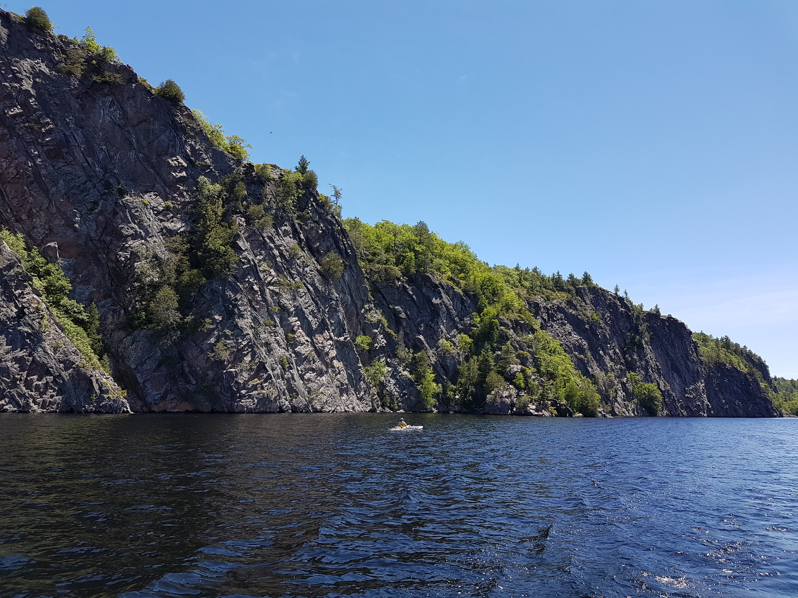
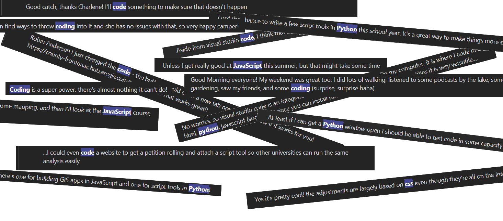
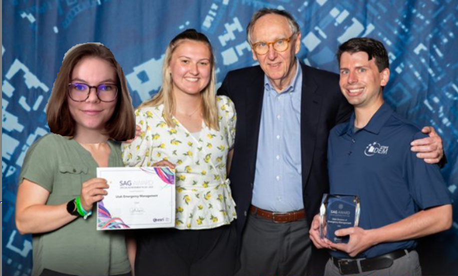
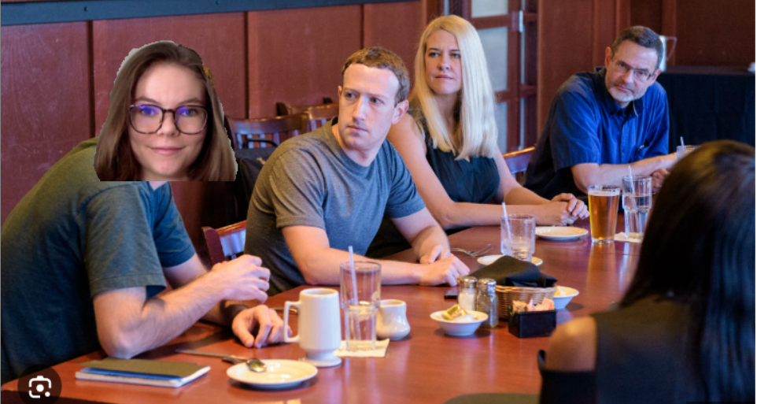

Yeehaw!🤠 I got to see outside of urban Kingston. I saw private lanes, some curious people, animals that I decided were out to get me, and more!

I got to code in the GIS field, and the GIS team did not hear the end of it... (sorry). I didn't think I would get to have this experience for AT LEAST a couple years, so this was a really amazing opportunity. See below: only a fraction of the times I mentioned coding-related words on Teams.

I learned, I networked, I ate and left no crumbs... (at dinner). I learned about VertiGIS technology, I had my first corporate dinner, I watched Jack Dangermond speak (and definitely met him too!).


This event and my team helped me get an independent study as an undergrad student, a really cool supervisor, and a chance at an accelerated PhD. In a situation like this where you are an underdog, having a job in your field and relevant ongoing projects is a big help. None of this would have been possible without the conversations and connections I gained through this job.